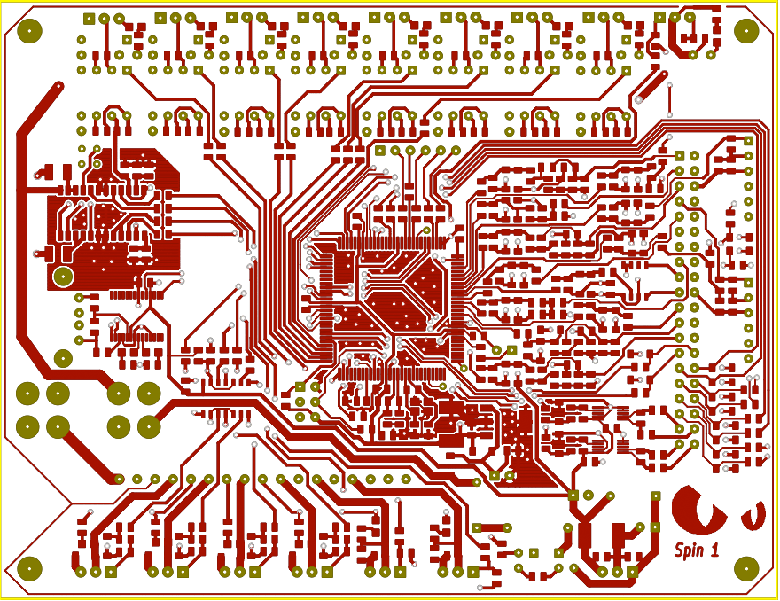
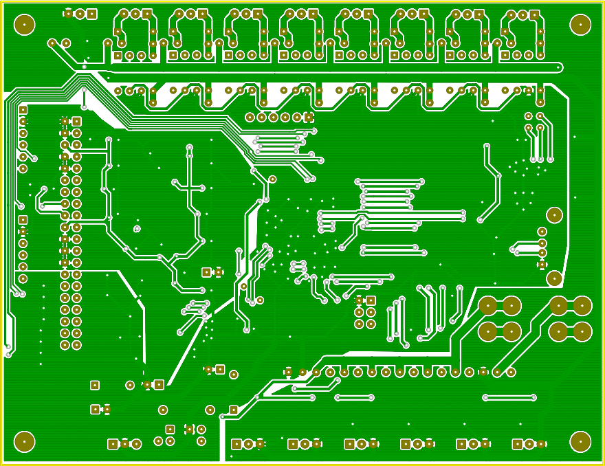

Introduction
This guide shows you how to choose the components, how to order the components and how to properly build and connect your Spin 1 board to a vehicle.
Puma uses FreeEMS vanilla firmware, PC tuning software and Puma hardware to control fuel and ignition of large variety of engine configurations. Visit the Puma website for a more detailed overview.
This version of the manual includes instructions for the Spin 1 board, which is commonly provided as just a bare PCB board. You will need to purchase parts based on the BOM, and then install those parts. You will also need to program the board via the BDM programming port to get the initial boot loader installed. After the initial build, the board con be programmed with an USB connection to your computer. Supported platforms include Windows, Mac and Linux.
Index
PCB overview

PCB top view
This is the top side view of the PCB. The top-side traces are visible.

PCB bottom view
This is the bottom side view of the PCB. The bottom-side traces are visible.
Configuring the BOM
Important notes
- The EGT circuit doesn't work (it has a 500°C limit).
- The USB connector is wrong (It's female A, which is reserved for host devices).
- Don't buy the female A connector nor the male A-A cable.
- Hack a mini-usb or type B female connector instead and use an appropriate cable.
- The shutdown circuit won't work, the parts for it are not in the BOM and there will just be unpopulated pads for it on the PCB.
Overview
Configuring the BOM is a tricky part. We don't yet have full documentation about what's actually needed. At this time, you may try to figure it out mostly on your own.
Download the BOM here.
The BOM is an Excel spreadsheet and it works imported into OpenOffice too.
Setting up the parameters
Legend of acronyms
INJ-H: Amount of High-Z injectors.
- If you have High-Z injectors, enter the a number equal to the amount of injectors in your engine.
- In this example, we have four High-Z injectors.
INJ-L: Amount of Low-Z injectors.
- If you have Low-Z injectors, enter the a number equal to the amount of injectors in your engine.
- In this example, it's 0 because there are four High-Z injectors conifigured.
IGN: Amount of Ignition drivers.
- For a 4-cylinder engine with wasted spark, 2 is fine.
- If you plan to use your distributor, 1 is fine.
- Enter 0, if you are not planning to drive your ignition with FreeEMS.
RPM: Amount of RPM inputs.
- Enter 1, if you are going to use a single trigger wheel. Fine for bank and semi-sequential injection and wasted spark.
- Enter 1, if you are going to use just the hall signal from your distributor. Will not allow sequential anything nor ignition.
- Enter 2, if you are going to use both crank and cam signals; Required for sequential injection and sequential injection.
MAPB: Boosted MAP sensor and its input circuit.
- You don't need this, unless you are going to read boost levels from a supercharger or turbo. It includes an MPX4250AP sensor.
MAPN: Regular vacuum MAP sensor and its input circuit.
- You'll want this to read the vacuum levels from your inlet manifold. It includes an MPX4100AP sensor.
AAP: Ambient air pressure sensor and its input circuit.
- You'll want this in most cases. It's used for normalization of the MAP vs atmospheric pressure. It includes an MPX4100A sensor.
MAF: Air mass flow sensor circuit?
- This is an alternative to the MAP sensor.
- It usually doesn't make sense to use both.
GPO: General Purpose output circuits.
- You'll probably not need these.
O2: Lambda sensor input circuits.
- Enter 1
- Only wide-band lambdas are supported at this time.
EGT: Thermocouple driver IC
- In Spin1, this one is a bit crippled.
- It only supports up to 500°C temperatures as-it's currently configured.
- The EGT would support up to 1200°C, if it would be supplied with 12V instead of 5V
- You'll not use this, so enter 0
TCPL: Thermistor filtering circuits
- In most cases, you'll use two:
- One for the inlet air temperature
- Another for the coolant temperature.
AN: General purpose analog inputs
- Spin 1 doesn't need this.
STP: Stepper driver
- Untested, and no firmware to drive it yet.
ANP: Analog protection circuits
- Max-out; Protection diodes (Schottky, SOD123 package). This way the board is protected against voltage spikes and other
harmful stuff.
DGP: Digital protection circuits
- Protection zeners (5v1, SOD123 package).
- These have known issues in the Spin1 hardware revision, so enter 0
Sourcing the components
You might already have some of the components, omit those.
If you prefer Newark, Mouser or Farnell:
The second sheet (MFG BOM) of the spreadsheet has a table of components formatted for these distributors.
If you prefer Digikey:
The third sheet (DIGIKEY BOM) of the spreadsheet has a table of components formatted in the Digikey format.
Next, just export the sheet of your choice into a Comma-Separated-Values (.csv) formated file and submit the CSV file into the web store of your favourite parts supplier.
Assembling the board
Use the KiCad documents as a guideline of the schematics (should be replaced with image-how-to's)
Follow these steps sequentially:
Spin1-specific modifications
You'll need to perform these modifications to the PCB board.
Step 1: MCU circuits
Follow the schematic to locate the component values
Step 2: Verification using the firmware
Step 3: RPM circuits
Placement
- Install RPM input circuit
- Choose either hall or VR input.
Step 4: Miscellaneous circuits
Placement
- Install misc outputs like Fuel, etc.
Step 5: Injector circuits
Step 6: Ignition circuits
Some instructions about how to bake the board in your oven.
- First things first: Ensure your oven won't be used for cooking food. It will end with high levels of lead.
- You're going to use paste, so start with the passive components, and leave the MCU for the end. This ensures the paste will be (less viscous?) by the time you assemble the MCU.
Uploading the firmware
Installing the serial monitor
Uploading the firmware
Uploading the firmware
- Install SeanK’s loader
- Connect an USB cable between your computer and Puma
- Turn Puma on (jumper the load/run header).
- Select the device
/dev/ttyUSB[n] in Unix-like operating systems and COM[n] on Windows.
- Press the "Load" button.
- In the dialog, select the .s19 firmware file you want to use.
- Wait until the erasing and programming phases are done.
- Close the communications.
- Remove the load/run jumper in the header and reset de board.
The FreeEMS firmware is now installed on your Puma board.
FreeEMS Documentation is distributed in the hope that it will be useful, but WITHOUT ANY WARRANTY; without even the implied warranty of MERCHANTABILITY or FITNESS FOR A PARTICULAR PURPOSE. See the GNU General Public License for more details.
{kind=link}
{kind=link}
{kind=link}
{kind=link}
{kind=link}
{kind=link}